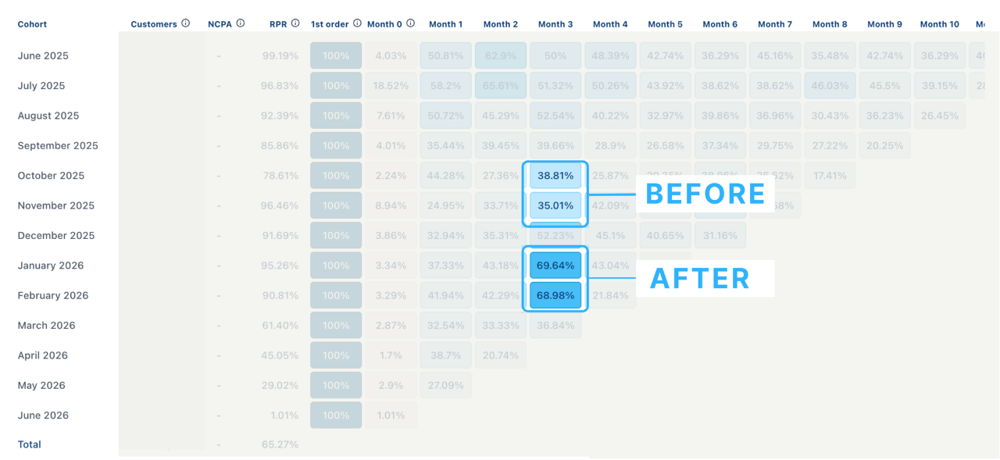

Retention & lifecycle strategist · São Paulo, Brazil (UTC-3) · akabraga1000@gmail.com · LinkedIn
Eight years in marketing, the last five in retention. Co-founder of BMM Digital, a group of our own DTC brands (about US$5M cumulative from May 2021 to June 2025, with a team of up to fifteen). Since 2025, my own retention consultancy, running lifecycle end to end for five DTC brands at once. 150+ flows and 500+ campaigns shipped.
On BladerPRO (PrimerMAN, our own direct response brand), month-3 retention by cohort was holding at 35-39%, with most of the loss before the third charge. I rebuilt the lifecycle as one connected system around the habit, so the refill stopped behaving like a one-off order. The January and February 2026 cohorts reached 69% at month 3. Same brand, same product.

A 5-in-1 electric shaving kit with blade refills delivered at home. Direct refill subscriptions weren't a thing in Brazil yet, so I sourced the tools and negotiated the implementation (Shopify, Guru as the subscription engine, Klaviyo for subscribers), and I designed the retention strategy and its metrics: LTV, CAC payback within contribution margin, retention by rebill, voluntary and involuntary churn, MRR.
Reports open on the client's business, not on email: profit, repurchase rate and LTV by cohort, with the email and SMS share underneath. Attributed revenue is a report, not the scoreboard.
More work, the campaigns and flows I created: akabraga1000-ux.github.io/portfolio